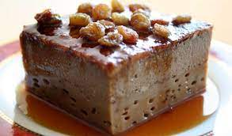

html
Sri Lankan Watalappan (Cardamom Spiced Coconut Custard)
Sri Lankan Watalappan (Cardamom Spiced Coconut Custard)

Ingredients
- 4 whole eggs
- 2 egg yolks
- 1/2 lb natural dark brown molasses sugar or finely grated kitul jaggery
- ⅛ cup hot water
- 3 -4 cardamom pod seeds crushed just over ¼ tsp
- ¼ tsp of nutmeg (If using fresh nutmeg, use less as it will be more potent)
- 2 cups of thick coconut milk (First press milk) if the coconut milk is lumpy – which can happen in cold weather – warm it up to dissolve the lumps
- Pinch of salt
Recipe
- 01. Preheat the oven to 320°F/160°C.
- 02. Prepare 7-8 1/2 cup capacity ramekins with oil.
- 03. In a large mixing bowl, combine the sugar and water and stir until it forms a paste with no lumps (the sugar does not need to be completely dissolved).
- 04. Whisk in the eggs and egg yolk, spices, and salt until well combined - that is, until the egg mixture becomes very slightly thick (not to the "ribbony stage," just thick enough to thoroughly combine the sugar and eggs). Make sure the egg mixture does not become frothy.
- 05. Whisk in the 2 cups of coconut milk thoroughly.
- 06. Fill the prepared ramekins (or a large dish if you prefer) with the mixture. Wrap the ramekins / dish in foil.
- 07. Bake the ramekins/dish in a water bath for 30-40 minutes for ramekins and up to an hour for a large dish, depending on depth. The custard should be set but slightly wobbly in the center.
- 08. Remove from the oven and cool in the water bath for about 15 minutes.
- 09. When the ramekins are cool enough to handle, remove them from the water bath and place them in the fridge to chill for at least 3 hours (longer for larger dishes). It's best to chill it overnight.
- 10. Serve plain or with cashew nuts on top.